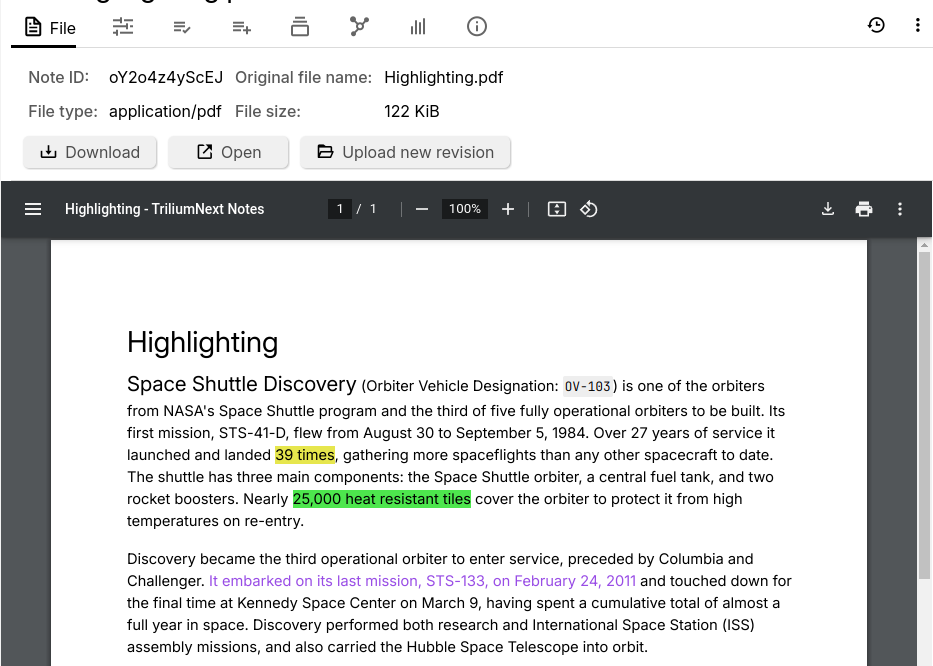

File
The File note type can be used to attach various external files such as images, videos or PDF documents.
Uploading a file
Since these files come from an external source, it is not possible to create a File note type directly:
- Drag a file into the Note Tree.
- Right click a note and select Import into note and point it to one of the supported files.
Supported file types
PDFs
PDFs can be browsed directly from Trilium.
Interaction:
- Press the menu icon at the top-left to see a preview (thumbnail) of all the pages, as well as a table of contents (if the PDF has this information).
- See or edit the page number at the top.
- Adjust the zoom using the buttons at the top or manually editing the value.
- Rotate the document if it's in the wrong orientation.
- In the contextual menu:
- View two pages at once (great for books).
- Toggle annotations (if present in the document).
- View document properties.
Images

Interaction:
- Copy reference to clipboard, for embedding the image within Text notes. See Image references for more information.
Videos

Video files can be added in as well. The file is streamed directly, so when accessing the note from a server it doesn't have to download the entire video to start playing it.
Audio
Adding a supported audio file will reveal a basic audio player that can be used to play it.
Interactions:
- The audio can be played/paused using the dedicated button.
- Dragging the mouse across, or clicking the progress bar will seek through the song.
- The volume can be set.
- The playback speed can be adjusted via the contextual menu next to the volume.
Text files
Files that are identified as containing text will show a preview of their content. One common use case for this type of file is to embed text files whose content is not necessarily of interest to the user, such as third-party libraries or generated content, that can then be downloaded if needed.
Note that generally text files will be imported as either Text or Code notes. To bypass this behavior and create a File note type, use the Import into note feature and uncheck Import HTML, Markdown and TXT as text notes, as well as Import recognized code files as code notes.
Since one of the use cases for having files instead of notes is to display large files, the content preview is limited to a relatively small amount of characters. To view the full file, consider opening it in an external application.
Unknown file types

If the file could not be identified as any of the supported file types from above, it will be treated as an unknown file. In this case, all the default interactions will be available such as downloading or opening the file externally, but there will be no preview of the content.
Interaction
- Regardless of the file type, a series of buttons will be displayed in
the Image or File tab in the Ribbon.
- Download, which will download the file for local use.
- Open, will will open the file with the system-default application.
- Upload new revision to replace the file with a new one.
- It is not possible to change the note type of a File note.
- Convert into an attachment from the note menu.
Relation with other notes
-
Files are also displayed in the Note List based on their type:

- Non-image files can be embedded into text notes as read-only widgets via the Include Note functionality.
- Image files can be embedded into text notes like normal images via Image references.